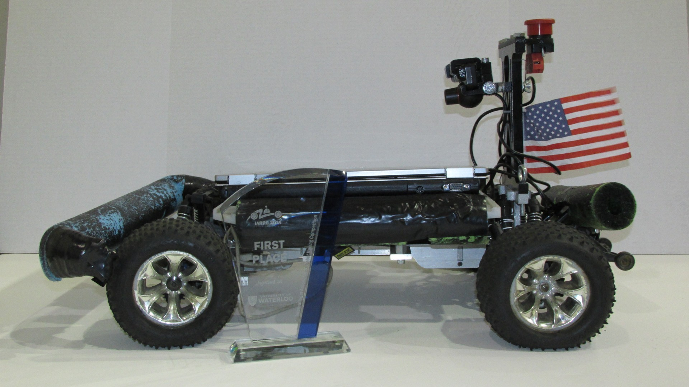

evan_bretl


about_me
Currently a first-year at the Georgia Institute of Technology, majoring in Computer Science with particular interest in AI, simulation, and making the world a better place.
projects

roboracing
I contribute software to the undergraduate autonomous racing team at Georgia Tech. We compete in the Sparkfun AVC, Sparkfun A+PRS, and IARRC racing competitions, for which we program vehicles of varying sizes to direct themselves around a track with obstacles.

cane_walker
The CANE (Computerized Aide for Navigating the Environment) was an effort by my friend Tyler and I in high school to provide blind and motor-impaired users with a low-cost sensing tool for navigation. I led the software and UX development from spring 2015 until fall 2016.